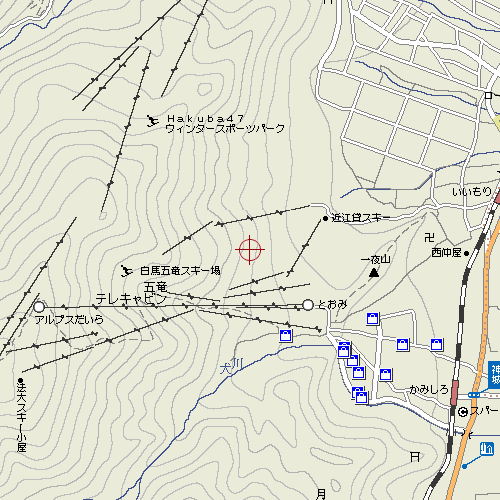

Fushya Hakuba Gooryu
Table of contents
Фушя. Будиночок в горах.
Знаходиться прямо біля лижних трас Хакуба-Ґорю, преф. Наґано. Двохповерховий будинок, 2й поверх три кімнати по 6 татамі, 1й поверх: вітальня, кухня-їдальня, туалети, 1 кімната 6 татамі.
Сторінка в інтернеті власника будинка
Сторінка в інтернеті власника будинка знаходиться за цією адресою: http://www5.ocn.ne.jp/~fushya/home1.htmМапи
це місце на сторінці maps Yahoo!приблизне положення будинка на Maps Yahoo!
Будинок і підйомники Хакуба-Ґорю
Сам будиночок знаходиться приблизно в місці позначеному хрестиком на мапі нижче.- Прямі лінії з засічками — лижні підйомники.
- Внизу підйомників знаходиться комплекс ресторанів — на мапі кружечок з написом とおみ
- тут же біля ресторанів — автостоянка (безкоштовно),
- взимку до будинку під'їхати неможливо. Машини треба зупиняти біля とおみ。
- найближча станція електрички Камішіро (かみしろ на мапі №2, нижче)
Підйомники Хакуба-Ґорю і Хакуба-47
Недалеко від Хакуба-Ґорю знаходиться лижна станція Хакуба-47. На мапі далі в трохи меншому масштабі показані обидві станції. Можна піднятися на підйомнику однієї і спуститися на іншу.

Фото
Кілька фото з альбомів Краян за адресою поданою даліhttp://yarylo.sytes.net/galereya/gallery/hakuba2002
Як добиратися
Машиною
- Швидкісна дорога Nagano Road (відгалуження від Chuo Highway)
- з'їзд на Toyoshina I.C. (豊科 I.C.)
- 45 км по дорогам 147, 148
або
- з'їзд на Nagano I.C.
- 43 км по дорозі 148.
Електричка
- Станція Kamishiro Station ( Oito Line )
- автобус shuttle — 5хв
або
- станція Наґано
- автобус 60 хв
Автобус
Інформація про вартості і розклад взята з сторінки Alpico Bus. Свіжа інфомація має бути на головній сторінці нижче.Від станції Shinjuku
Розклад
Вартості
Від Наґоя-Матцумото
Додаткова інформація
Кілька сторінок в інтернеті присвячених Хакуба-Ґорю.- http://www.skijapanguide.com/skiskihakubagoryu.htm
 — загальна інформація, вартості квитків на ліфти, як добиратися, схеми спусків.
— загальна інформація, вартості квитків на ліфти, як добиратися, схеми спусків.
- http://www.snowjapan.com/e/resorts/resortdetail.php?resid=63 — детальна інформація (стан снігу, схеми, інше.
- http://www.hakubagoryu.com/ski/ — офіційна сторінка Хакуба-Ґорю.
Створений : dmytro.
останні зміни: Середа 08 з December, 2004 23:16:48 JST dmytro.
Оригінал документу знаходиться на http://tiki/tiki/tiki-index.php?page=Fushya%20Hakuba%20Gooryu